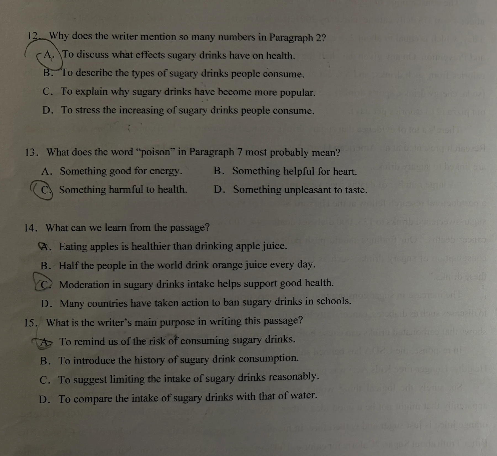
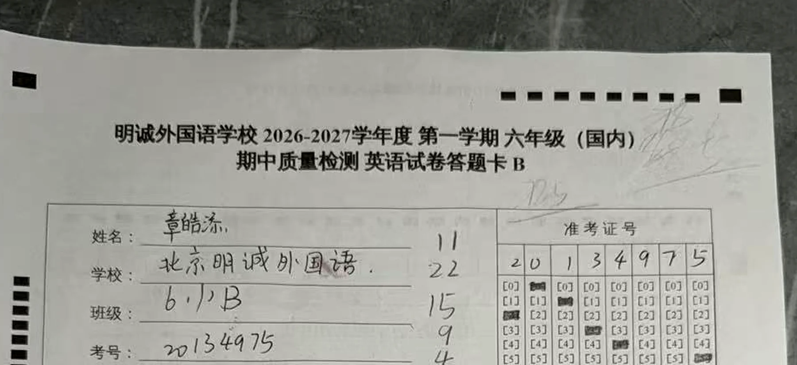
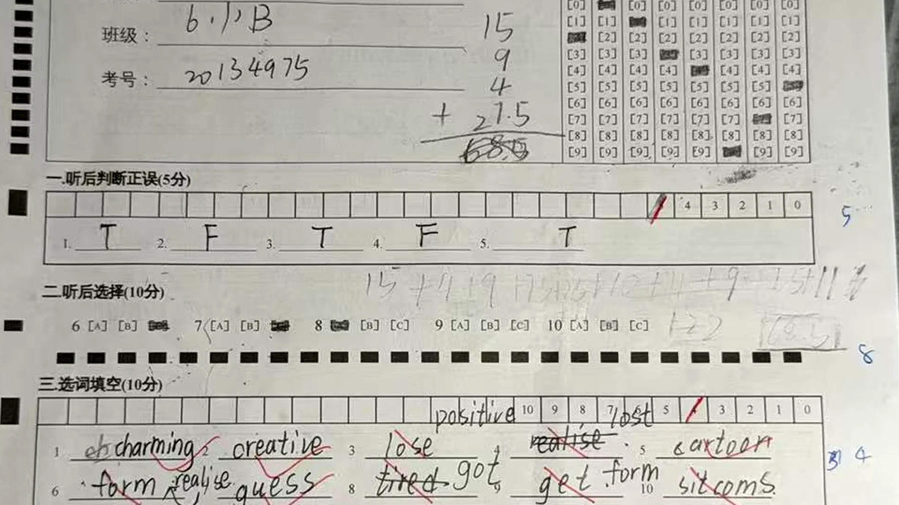
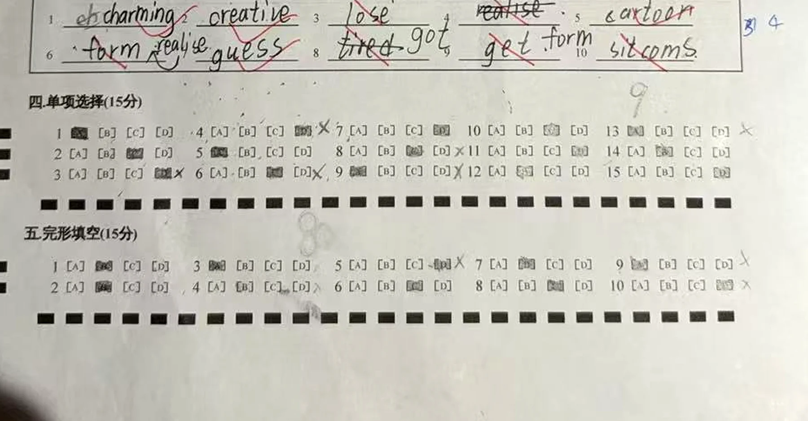
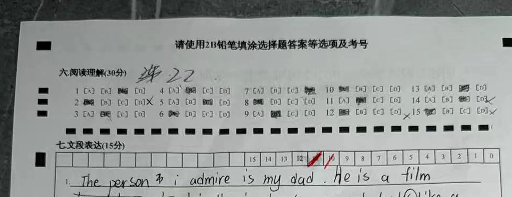
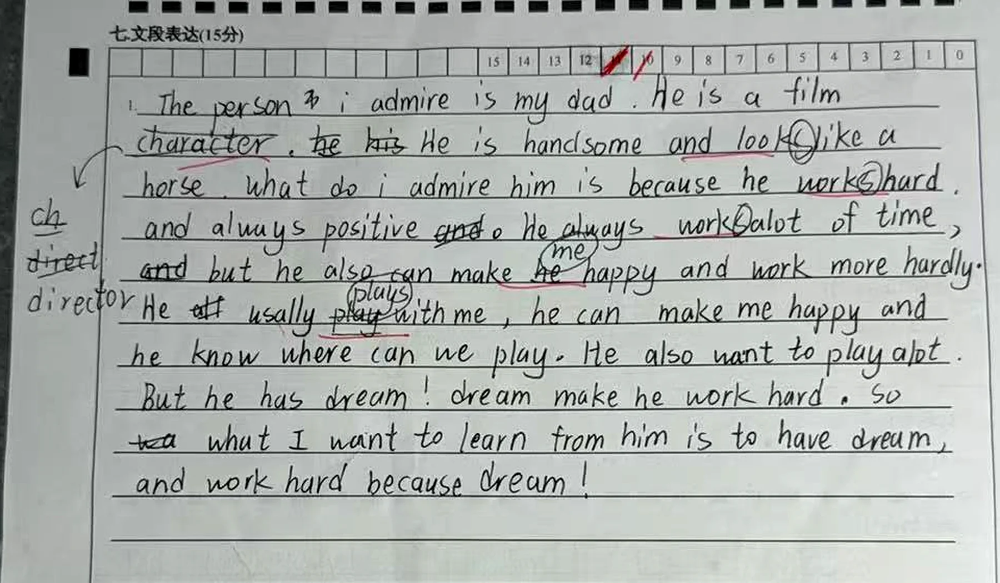
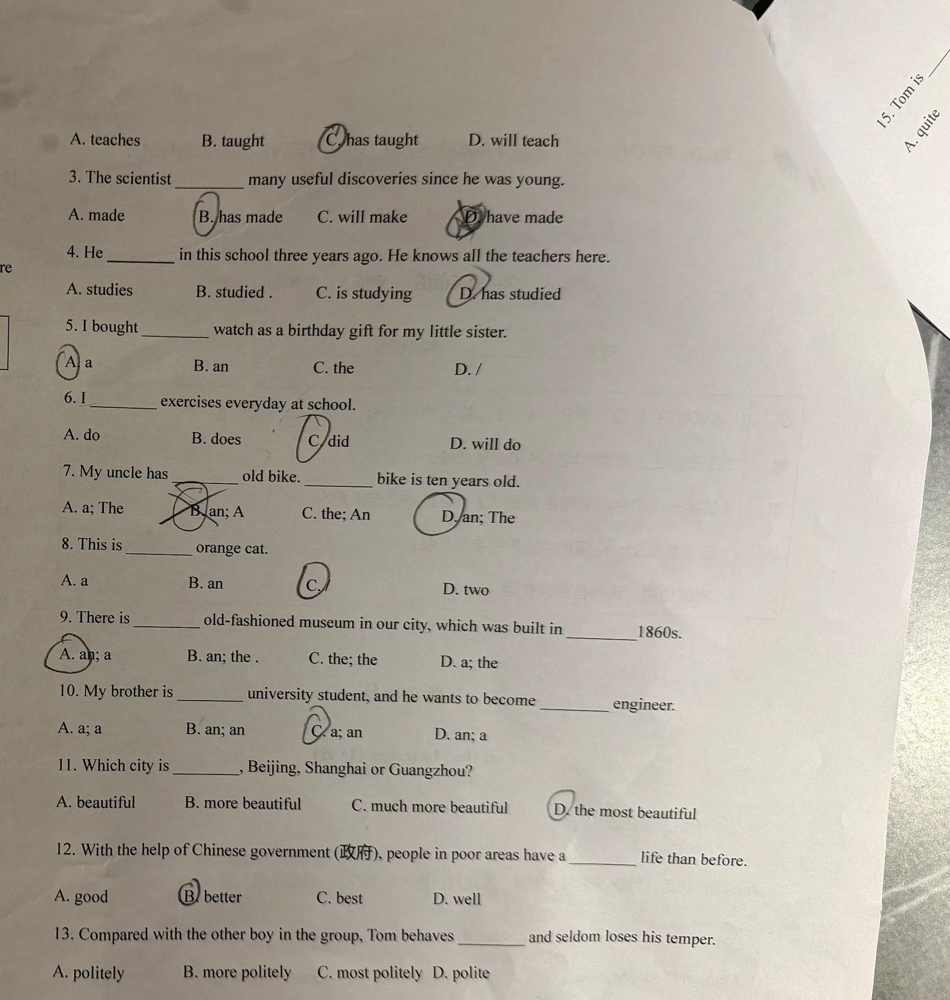

皓添期中考试错因分析报告
依据 8 张试卷原题照片与 2 张答题卡，对分数、错题和作文逐项复核。
考试范围：Unit 1–3
卷面总分：68.5 / 100
分析方式：校内原始分 + 参考雅思评价维度
阅读摘要
听力前段较稳
听力 11 / 15
判断题和前三道选择题正确，最后两道选择题错误，失分集中在听力末段。
阅读“表层强、推断弱”
阅读理解 22 / 30
直接定位和词义判断较好，失分集中在双条件匹配、数据作用、跨句推断和作者意图。
输出准确性是主瓶颈
词汇 4 / 10，语法 9 / 15
已认识部分单词和规则，但一进入完整句子，就容易在搭配、时态、冠词和主谓一致上失分。
核心判断：皓添并非“完全看不懂”。他能抓住大部分明确信息，也能围绕题目写出基本内容；真正拉低成绩的是把已学知识稳定地放进句子和语篇的能力。难度从“认出答案”升级到“根据语境选词、解释逻辑、自己造句”时，准确率明显下降。
| 卷面模块 | 计分 | 表现 | 主要问题 |
|---|---|---|---|
| 听力 | 11 / 15 | 中等偏上 | Q1–Q8 正确，最后两道听后选择 Q9–Q10 错误；没有考听写拼写。 |
| 选词填空 | 4 / 10 | 弱 | 语境选词、固定搭配、动词形式不稳定。 |
| 单项选择 | 9 / 15 | 中等偏弱 | 现在完成时、过去时、冠词、副词比较级。 |
| 完形填空 | 15 / 15 | 强 | 根据总分算式与听力最后两题失分重新归属，完形为 15 分。 |
| 阅读理解 | 22 / 30 | 中等偏上 | Q2、Q12、Q14、Q15，均涉及多个条件或篇章层逻辑。 |
| 写作 | 计入 7.5 / 15 | 弱 | 任务能完成，但语法错误密集、衔接松散、表达重复。 |
评分口径
本报告把两套分数分开处理：
校内原始分
直接依据答题卡。顶部算式可读为 11 + 22 + 15 + 9 + 4 + 7.5 = 68.5。结合“听后选择最后两题错误”的确认信息，本报告按“听力 11、阅读 22、完形 15、语法 9、词汇 4、写作 7.5”解释。
雅思评价框架
只借用雅思对听、说、读、写的评价维度，例如信息捕捉、长句理解、任务回应、连贯、词汇、语法和发音。不使用雅思 9 分制，也不把校内分数换算成雅思成绩。
写作评分格中另有接近“10 / 15”的红笔痕迹，但顶部总分算式按 7.5 计入。报告以 68.5 的总分算式为统计口径，并保留这一分数差异。口语没有录音、评分表或教师记录，因此不虚构口语分。
听说读写：参考雅思评价框架
听力 Listening
较稳
Q1–Q8 正确；Q9–Q10 错误，末段持续跟听和干扰项排除需要加强。
口语 Speaking
未测
缺少录音，流利度、发音和实时组织能力均无法从卷面判断。
阅读 Reading
中等偏上
显性信息定位较稳；多条件整合、长句逻辑和作者意图明显较弱。
写作 Writing
需加强
能回应题目，但语法错误频繁，词语搭配和句间衔接限制表达清晰度。
听力小维度
| 参考维度 | 表现 | 卷面证据 | 判断 |
|---|---|---|---|
| 主旨与事实细节 | 较稳 | Q1–Q8 正确，能完成判断和前三道选择。 | 能跟住前段信息主线。 |
| 同义替换识别 | 较稳 | digital pickled vegetables、节目类型等题目能正确对应。 | 主题词识别较好。 |
| 末段持续跟踪 | 需加强 | 最后两道听后选择 Q9、Q10 均错误。 | 信息累积到末段后，准确率下降。 |
| 干扰项排除 | 需加强 | 失分集中在最后两个三选一题。 | 需要区分“听到的词”和“真正回答问题的信息”。 |
| 听写与拼写 | 未测 | 本卷没有听力填空。 | 不能用选择题成绩代替拼写能力。 |
阅读小维度
写作小维度
| 参考维度 | 表现 | 证据 |
|---|---|---|
| 任务回应 Task Response | 基本完成 | 写了人物、外貌/身份、欣赏原因和学习点，但理由重复、展开不足。 |
| 连贯与衔接 Coherence & Cohesion | 需加强 | 主要依靠 and、but、so 串联，句子边界不稳，部分关系跳跃。 |
| 词汇资源 Lexical Resource | 需加强 | 能使用 positive、admire、dream，但搭配错误和重复较多。 |
| 语法范围与准确性 Grammar | 明显需加强 | 主谓一致、冠词、从句结构和语序错误高频，影响句子自然度。 |
| 拼写与标点（补充） | 基本可辨 | alot 重复出现；大小写和标点不稳定，但拼写并非最大失分源。 |
口语小维度
流利度与连贯性、词汇资源、语法范围与准确性、发音四项均标记为“未测”。作文只能提示口语中可能出现相同的语法风险，不能替代真实口语评分。
阅读错题：错在信息整合与篇章判断
| 题号 | 学生答案 | 正确答案 | 具体错因 | 对应能力 |
|---|---|---|---|---|
| Q2 | A | D | 只看到“历史”就选择长城，漏掉 Mary 还要求“traditional Chinese clothing”；D 同时满足兵马俑和汉服两个条件。 | 多条件同时保留 |
| Q12 | A | D | 把“数字内容”误当成“数字的写作作用”。第二段连续列比例和热量，是为了强调含糖饮料摄入不断增加。 | 识别举例/数据的功能 |
| Q14 | C | A | 文章明确比较整颗苹果和果汁：整颗苹果有纤维帮助代谢，因此吃苹果比喝苹果汁更健康。学生选择了较泛的“适量饮用”。 | 跨句比较与具体推断 |
| Q15 | A | C | 学生抓到“风险”，但漏读结尾 drink in moderation；作者最终目的不是让人完全恐惧饮料，而是建议合理限制摄入。 |
作者意图与全文主旨 |
四道错题没有集中在生词，而是集中在“一个答案要同时满足多个条件”和“作者为什么这样写”。这说明皓添的阅读下一步不应只做更多查词，而要训练信号词、证据范围和选项精确度。


语法与词汇：规则认识了，但没有稳定进入句子
语法选择的六类关键错误
| 题目 | 学生选择 | 正确表达 | 错误机制 |
|---|---|---|---|
| Q3 | have made | has made | since 判断出现在完成时后，仍漏掉单数主语 The scientist 对助动词的限制。 |
| Q4 | has studied | studied | three years ago 是明确过去时间，不能用现在完成时。 |
| Q6 | did | do | every day 表示习惯，且主语是 I。 |
| Q8 | 错误冠词 | an orange cat | 冠词按发音判断，orange 以元音音素开头。 |
| Q9 | an; a | an; the | 首次提到博物馆用 an；年代固定表达为 the 1860s。 |
| Q13 | politely | more politely | Compared with 已经给出比较关系，需要副词比较级。 |
选词填空的错误链
| 句子线索 | 学生答案 | 正确答案 | 问题性质 |
|---|---|---|---|
have had a ___ influence | lose | positive | 没有识别固定搭配 positive influence。 |
have ___ their lives | realise | lost | 词义选择错误，同时漏掉 lose → lost 的过去分词变化。 |
didn't ___ it was so late | form | realise | 没有利用后接宾语从句的句型线索。 |
___ a reputation | tired | got | 固定搭配不熟，且没有检查词性。 |
___ an opinion | get | form | 混淆 get 与 form 的常见搭配。 |
这些错误不是单纯“单词没背过”。词表中的词大多见过，失分发生在三个步骤：先判断空格需要什么词性，再根据前后搭配缩小范围，最后按时态和单复数变形。皓添目前经常直接从词表里挑一个“看起来认识”的词，跳过了句子验证。
写作：内容可理解，但句子准确性不足
作文能够围绕父亲展开，也写到了外貌/身份、相处、梦想和学习点，说明任务意识存在。主要失分不在“没有内容”，而在句子组织和语言准确性。
| 原文片段 | 建议改为 | 错误类型 |
|---|---|---|
The person i admire is my dad. | The person I admire is my dad. | 代词 I 必须大写。 |
He is a film character. | He is a film director. | 结合教师订正，属于身份词误用。 |
He always work alot of time. | He always works very hard. | 主谓一致、搭配、词间空格。 |
work more hardly | work harder | hardly 意为“几乎不”，不是 hard 的比较级。 |
He usually play with me. | He usually plays with me. | 第三人称单数。 |
he know where can we play | he knows where we can play | 主谓一致 + 宾语从句陈述语序。 |
He also want to play alot. | He also wants to play a lot. | 第三人称单数 + 拼写/词间空格。 |
he has dream | he has a dream | 可数名词单数前缺冠词。 |
dream make he work hard | His dream makes him work hard. | 限定词、主谓一致、宾格代词。 |
错误频率概览
以下为卷面可确认例次；同一个句子可能同时计入两个维度。
拼写统计：高频问题少于语法和搭配问题
| 卷面写法 | 正确写法 | 确认次数 | 说明 |
|---|---|---|---|
alot | a lot | 2 | 本次最明确、出现最多的拼写/词间空格错误。 |
usally | usually | 1 | 漏写 u，可按音节 u-su-al-ly 记忆。 |
looklike | look like | 1（字迹较弱） | 可能存在连写；按“动词 + 介词”分开检查。 |
小写 i | 大写 I | 1 | 严格说属于大小写规则，不是单词拼写。 |
需要纠正一个直觉：这次考试并不是“拼写错太多”导致低分。可确认的重复拼写错误主要是
alot。更大的失分来自“单词放错位置”或“形式没有变化”，例如 lose → lost、form an opinion、get a reputation。训练重点应先放在完整句和搭配，而不是只抄单词。
教学优先顺序
- 先修主谓一致和冠词。这些错误同时出现在选择题和作文里，说明不是粗心，而是尚未形成自动检查习惯。
- 把词汇改成“搭配 + 完整句”学习。优先复现
positive influence、lose one's life、realise that...、get a reputation、form an opinion。 - 阅读专练“两个条件”和“作者为什么这样写”。每题必须圈出全部条件，并说明数字、例子、转折或结尾句的作用。
- 补一次 90 秒口语样本。使用同一题目 “The Person I Admire”，才能补齐流利度、发音、实时语法和词汇四项评分。
证据与来源












资料清单
[1] 《明诚外国语学校 2026–2027 学年度第一学期六年级（国内）期中质量检测》试卷照片，8 张。
[2] 皓添期中考试答题卡，2 张。
所有结论仅依据本地试卷、答题卡和可辨认批改痕迹；未使用外部成绩或推测性口语数据。